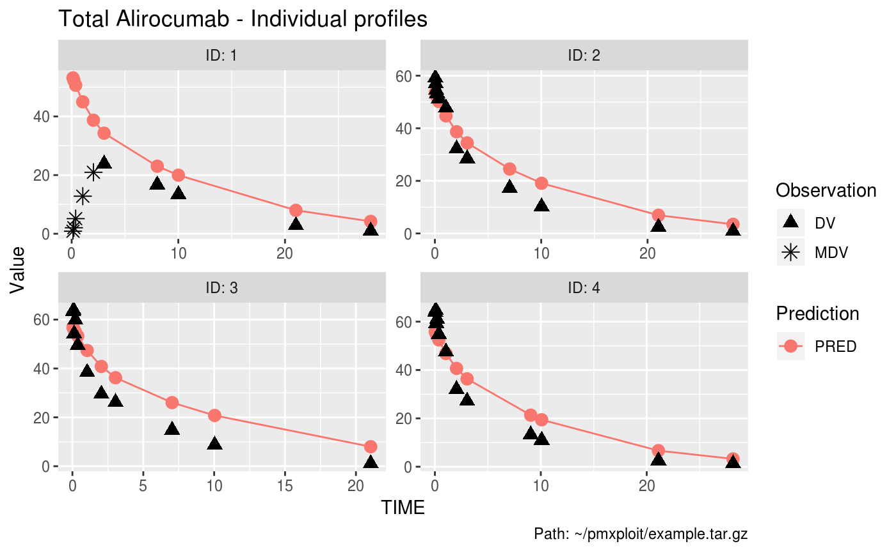

plot_individual_profiles.RdIndividual profiles (observations, predictions) versus independent variable
plot_individual_profiles(run, ids = NULL, compartment, predictions = "PRED", idv = "TIME", log_dv = FALSE, predictions_dots = TRUE, show_observations = TRUE, categorical_covariate = NULL, x_scale = "linear", y_scale = "linear", logticks_annotation = TRUE, facetted = TRUE, facet_scales = "free", n_row = NULL, n_col = NULL, keep_time_zero = FALSE, auto_legend = TRUE)
| run |
|
|---|---|
| ids | integer vector of the IDs of the individuals to plot. Default is
|
| compartment | integer. Number of the compartment of the dependent variable. |
| predictions | character vector. Name of the predictions column(s) in the
dataset. Default is |
| idv | character. Name of the independent variable column to plot on the x-axis. Default is |
| log_dv | logical. Set it to |
| predictions_dots | logical. If |
| show_observations | logical. If |
| categorical_covariate | character. A categorical covariate to split the data. May be useful for covariates that vary within an individual. |
| x_scale | character. X-axis scale, one of |
| y_scale | character. Y-axis scale, one of |
| logticks_annotation | logical. If |
| facetted | logical. If |
| facet_scales | character. |
| n_row | integer. Number of rows of facets. |
| n_col | integer. Number of columns of facets. |
| keep_time_zero | logical. If |
| auto_legend | logical. When |
A ggplot2 object.
EXAMPLERUN %>% plot_individual_profiles(ids = 1:4, compartment = 2, predictions = "PRED")EXAMPLERUN %>% plot_individual_profiles(compartment = 2, predictions = "PRED", facetted = FALSE)